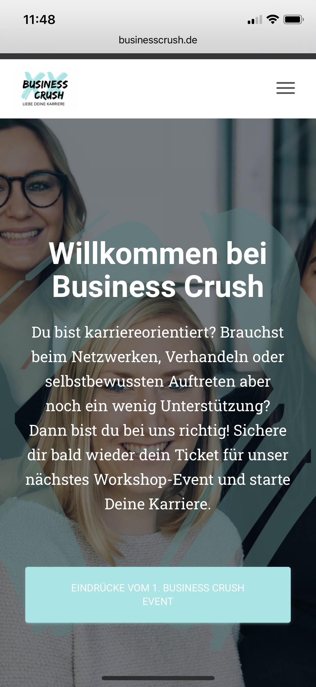
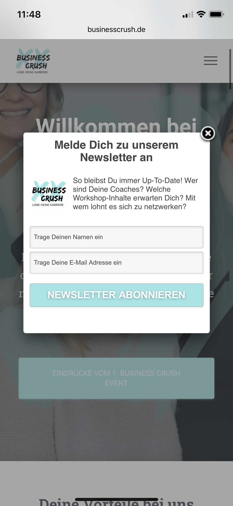

To be honest, solving problems is not always fun. But my brain thinks in a solution-oriented manner, connects quickly and is always on the hunt of the best solution possible. Plus, the feeling of having solved a problem is a great bonus. ;)
combining design & code
The beauty that can be created with code really is beautiful! As the child of a financial expert and an art teacher, the realization that I could combine technology and creativity in coding was one of the biggest motivators to change my career.
creative thinking
I am a curious person. I enjoy learning, am curious about new technologies and like to think outside the box. Coming up with creative ideas is fun and is a strength of mine that I see reflected again and again.
My Projects


As part of my final project at journalism school, I set up a website using Wordpress that drew attention to our event. The site was used to sell tickets, sign up for our newsletter and find all the important information about the event (e.g. speakers, ticket price categories, venue, who the event is aimed at, etc.).
I have always built websites and blogs with Wordpress or Squarespace, which I used for private (e.g. a travel blog in 2014) or school purposes. The designs and structure of the site have varied depending on the project, but I have always valued aesthetics and logical navigation as well as user experience.
My Journey
I have always been fascinated by websites and new technologies. But it was only through my master's degree in 2022 that I discovered my love for coding. Since then, the topic has stuck with me and I started teaching myself programming via Udemy, Bootcamp and YouTube.
The most important stages of my tech & web development career: